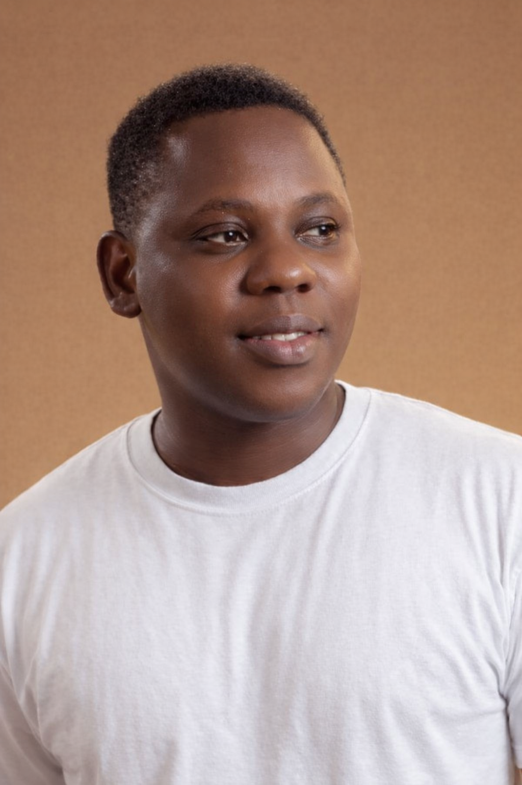

Richard Eyo

Objective
To secure a challenging position in a reputable organization where I can contribute my skills and knowledge to achieve organizational goals.
Education
- Business Administration, Ahmadu Bello University Zaria, 2023
- High School Certificate, Blessed Child Academy Rivers, 2011
Work Experience
Designer-Kraiger Services
February 2022 - August 2024
- Designed and created marketing materials
- Collaborated with team members to develop creative solutions
- Translate user and business needs into functional design concepts
Videographer & Editor-WJGB Creation
December 2024 - March 2025
- Deliver videos optimized for social media, web, and broadcast formats
- Edit raw footage and add effects like music, sound, and text
- Operated cameras and other video equipment to capture high-quality footage
Web Developer Intern-Maldorini Technologies Limited
January 2026 - Present
- Assisted in the development of web applications
- Collaborated with team members to implement new features
- Participated in code reviews and testing procedures
Skills
- Familiar with HTML, CSS, JavaScript, and React
- Strong understanding of responsive design principles
- Excellent problem-solving and communication skills
- Branding & visual identity
- Video production & editing
- UI/UX Design
Certifications
- Certified Full Stack Developer - Udemy, 2025
- UIUX Certification - Bootcamp, 2023
Languages
References
Available upon request.
Hobbies & Interests
Contact Information